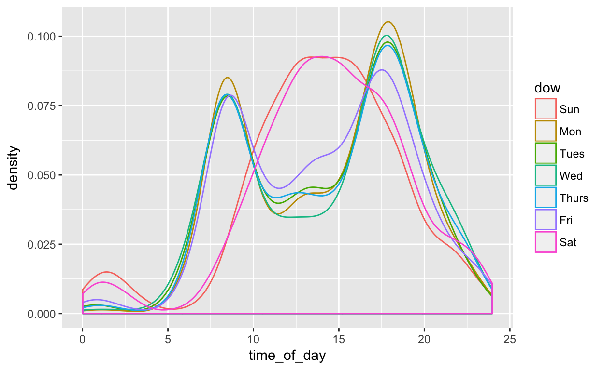

Orientation
In this project, you’ll examine some factors that may influence the use of bicycles in a bike-renting program. The data come from Washington, DC and cover the last quarter of 2014.
Bike_trips is a data table is a random subset of 10,000 trips from the full quarterly data. Start with this small data table to develop your analysis commands.
 The author visiting DC to try out the Capital Bikeshare system
The author visiting DC to try out the Capital Bikeshare system
Times and dates
The variables sdate and edate in Bike_trips contains the date/time of the start of the rental (sdate) and the end of the rental (edate). A date/time is an important sort of quantitative variable with special properties:
- When plotting or doing arithmetic, it is printed in a familiar format.
- You can extract specific components of the date/time, for instance:
- The day of the week with
lubridate::wday() - The hour in the day with
lubridate::hour() - The minute in the hour with
lubridate::minute()
- The day of the week with
To illustrate, make this density plot showing when, over the 3-month period covered by the data table, bikes are rented. The trend is downward. What about the sociology of bike use explains this?
Bike_trips %>%
gf_density( ~ sdate)And here are some simple statistics on the start times
mean( ~ sdate, data = Bike_trips) # mosaic style
Bike_trips %>% qstats( ~ sdate, mean, median, min, max) # statPREP styleASIDE: I don’t know particularly why someone would be interested in the mean start date/time, but it seems that intro stats courses have a deep interest in the mean. The statPREP style is an experiment into making a better integration between data wrangling and basic stats, in particular that the output of statistical operations should be in the form of a data table.
Diurnal rental patterns
It’s natural to expect that bikes are rented more at some times of day than others. Let’s examine how trips are spread over the 24-hours of the day. For this, we’ll need a bit of wrangling to convert the sdate date/time value into an hour of the day. The following code chunk shows how to get this in the form of a fractional hour, e.g. where 1:15pm will be hour 13.25.
Your job is to pipe the output of the wrangling statement into gf_density().
Bike_trips %>%
mutate(time_of_day =
lubridate::hour(sdate) +
lubridate::minute(sdate) / 60) %>%
_______ # graphics commandStudent activity: Describe in words the shape of the distribution of start-times. Which aspects of the activities of everyday life can you see represented in the distribution?
Refining the patterns
The distribution of trip times over the day may itself be a function of other variables. Let’s consider two such variables:
- Day of the week, e.g. Sunday, Monday, …
- Who is renting the bike. The variable
clientdescribes whether the renter is a regular user (level Registered) or has not joined the bike-rental organization (Causal).
The following wrangling chunk adds a variable dow to represent the day of the week. The density plot shows the distribution of bike rentals over the course of each day.
Bike_trips %>%
mutate(time_of_day =
lubridate::hour(sdate) +
lubridate::minute(sdate) / 60,
dow = lubridate::wday(sdate, label = TRUE)) %>%
gf_density( ~ time_of_day + color:dow)
That graphic has problems! The point of graphics is to help the human viewer assimilate the patterns easily. With the graphic as is, the viewer has to switch back and forth between the legend and the graph. And color is a poor aesthetic to display variables which, like dow, have a definite order.
The graphic might be improved by eliminating the + color:dow in the formula. Instead, pipe the output of gf_density() into this statement:
gf_facet_wrap( ~ dow)Compare the faceted graphic to the one using color to represent dow. Decide for yourself which one is more effective.
Let’s refine things a little more. Using the same code chunk that you entered your faceted-by-dow commands into, add the following to the formula in gf_density():
+ color:NA + fill:"blue" + alpha:0.3Now for the client. Copy into the next chunk the full command you used to wrangle and generate the nice blue-shaded density plot. But make two modifications:
- Instead of setting the fill to be
"blue", use theclientvariable to determine the fill color, that is,fill:client. - Add a second argument to
gf_density()after the formula. The argument should beposition = "stack".
With position = "stack", separate density calculations are made for the two different kinds of client, and one is draped over the other like putting a feather comforter over a couch.
Try as an alternative position = "dodge", which does not stack the densities, but ties each to the x-axis.
Then try reversing the role of dow and client. That is, use client for faceting and dow for the fill aesthetic.
From the plots, figure out the story of how the casual clients (e.g. visitors to town, such as tourists) differ in their bicycle use from the registered clients (who live and work in town).
Which plot type, stack or dodge, helps display the story the most easily?
Simpler might be better
In the previous plots, you broke down the bike rentals by day of the week. Since there are seven days in a week, your plots had seven facets (or seven colors, depending on how you used dow in the plot). Does all that subdivision in the plot help tell the story.
There’s a different way to construct day of the week: weekend versus weekday. This wrangling statement will do the job:
mutate(wday = ifelse(lubridate::wday(sdate) %in% c(1,7), "weekend", "weekday"))Try this out in the following chunk, copying your commands from the previous chunks and substituting in the new mutate() statement.
Which do you prefer, the weekend versus weekday plot, or the seven-day plot?
Decisions of the sort you’ve tried out here can influence strongly the expressiveness of a graphic.